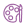

INFRASTRUCTURE
An AI-augmented process that compresses discovery and define — building to learn, not studying to guess.
Thanks for stopping by. My portfolio is currently private while I finish updates. Enter the password to continue.
This one's password-protected — a closer look at the thinking behind a project I'm proud of. If I sent you a password, you're in the right place; drop it below.
No password? Reach out to connectCurrently leading AI transformation at Realtor.com
I follow hard questions to human-centered answers.
TESTIMONIALS
Stephen was a joy to work with. He was an amazing blend of "think" and "do." I always knew that I'd get amazingly thoughtful design work from him that was both beautiful and innovative. He self-manages and leads well beyond his years, and I can't wait to see what he's up to in 10 years.
Stephen drove teams to deliver industry-leading experiences that changed how customers perceived the world's largest company. And he did it with a kindness and clarity that inspired me (and many others) to be better, try harder, reach further. Should you ever have the chance to work with Stephen, take it. Immediately. While you can.
Stephen is that unicorn that invariably makes everyone feel like they may actually accomplish the Herculean task set in front of them. More than once in my time at Walmart, I've given an assignment to someone and watched them look a little nervous at the task. Then I tell them that Stephen is going to help and all is well again. He's that guy. You want him on your team, always.
SELECTED WORK

Hi, I'm Stephen, inspired by adventure, fueled by family, and driven to make an impact.
MY GUIDING PRINCIPLES
Embrace curiosity, explore, evolve
Strive for excellence, not perfection
Design boldly, courage for impact
Love the problem, not the solution

Inspire by example, player coach
AI LEADERSHIP
An AI-augmented process that compresses discovery and define — building to learn, not studying to guess.
Named design and dev agents for critique, scope, usability, and consumer advocacy — each amplifying a designer, never replacing one.
Adoption tracked through behavioral metrics and leading indicators — whether the team's capability actually compounds, not vanity usage.
A workflow that takes design into the real codebase with guardrails — closing the gap between intent and shipped product.
Product Design Leadership · AI Pioneer
I build the teams, systems, and strategy that turn ambitious products into things millions of people rely on.
See what i've built20 years
obsessed with making experiences useful and beautiful.
120M+
weekly customers using products I've built with cross-functional teams.
AI First
Bringing curiosity, rigor and agility to every team I lead.
Footer
Thanks for stopping by. My portfolio is currently private while I finish updates. Enter the password to continue.
This case study is shared privately with clients and collaborators. Please enter the password you were given to continue.
Don't have the password? I'd be happy to hear from you.
Request access